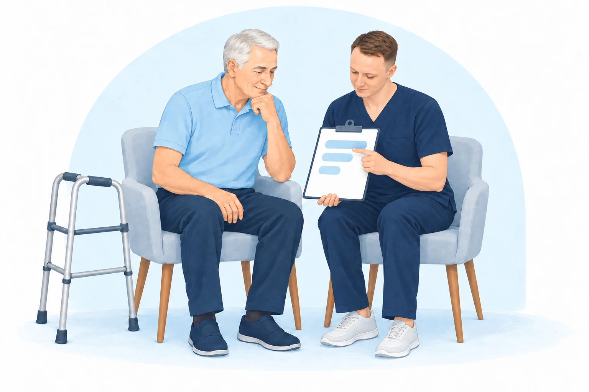
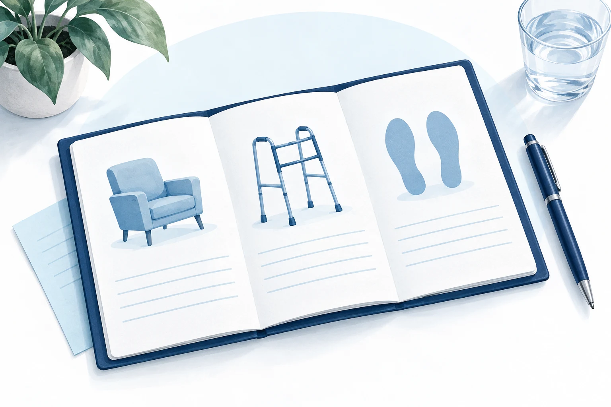

Содержание статьи
После замены тазобедренного сустава возникают вполне конкретные вопросы: как ходить с опорой, сколько нагружать ногу, как вставать с кресла и пользоваться лестницей? Нередко рядом с ними появляется страх: «А вдруг я сделаю что-то неправильно и наврежу?»
В моей практике реабилитация начинается не с длинного списка упражнений. Сначала мы разбираемся, что человеку разрешено сейчас, что мешает двигаться и какую ближайшую цель будем решать. Затем составляем последовательный план.
С чего начинается первая встреча
Ко мне обращаются на разных этапах: вскоре после операции, через одну-две недели или после реабилитационного стационара. Чаще всего я продолжаю выезжать к пациенту на дом: мы работаем над восстановлением и адаптацией к привычным домашним условиям. Если пациент может приезжать и хочет продолжать занятия в клинике, мы можем заниматься там.
Сначала изучаю выписку: какая операция выполнена, какую нагрузку разрешил хирург, какие ограничения движений сохраняются. Если человек уже проходил стационарную реабилитацию, смотрю и эту выписку — что делали и с какой нагрузкой.
Затем оцениваю, как пациент ходит с опорой, встаёт и садится, какой объём движений и сила мышц. Обсуждаем боль, отёк и ощущения после нагрузки. Смотрю технику упражнений и спрашиваю, какие движения вызывают страх.
Цель — не просто выполнить упражнения
Первые задачи могут звучать так:
- Уверенно вставать и садиться.
- Передвигаться по дому с подходящей опорой.
- Освоить подъём и спуск по лестнице.
- Понимать допустимую нагрузку и меньше бояться движения.
Мы выбираем цели вместе. Я объясняю, для чего нужно каждое упражнение и по каким признакам будем оценивать продвижение. Так пациенту понятнее, как занятия связаны с его повседневной жизнью.
Когда можно уменьшать опору и увеличивать нагрузку
Это два связанных, но не одинаковых вопроса. Разрешённая нагрузка на ногу и готовность ходить с меньшей опорой оцениваются отдельно.
В своей работе я учитываю рекомендации хирурга и то, как человек переносит текущую нагрузку: не усиливаются ли боль и отёк, насколько уверенно он идёт, удерживает равновесие и контролирует ногу. На этой основе решаем, что можно изменить.
Поэтому в индивидуальном плане нет автоматического правила «прошло две недели — пора убрать костыль». Дата контрольной встречи помогает оценить состояние, но сама по себе не означает готовность к следующему этапу.
Как мы проверяем прогресс
На каждом занятии я оцениваю движение к поставленной цели, уточняю реакцию на предыдущую нагрузку и при необходимости корректирую план. Иногда пациент приносит или присылает видео ходьбы и упражнений, чтобы разобрать технику.
Примерно раз в две недели в моей практике проходит более подробная контрольная оценка: какие цели достигнуты и готов ли человек к существенному изменению программы — например, к уменьшению опоры при ходьбе. Это ориентир организации моей работы, а не единый срок перехода для всех пациентов.

Зачем нужна персональная памятка
После встречи важно не только помнить названия упражнений, но и понимать, как их выполнять и какую нагрузку согласовали.
В формате консультации с индивидуальной памяткой план остаётся у пациента в письменном виде: выбранные упражнения, техника, допустимая нагрузка и ограничения. По мере повторной оценки план и памятка могут корректироваться. Это не универсальная программа из интернета, а продолжение нашей работы на встрече.

Когда занятие нужно прекратить
Если резко усиливаются боль или отёк, появляется температура, нарастающее покраснение или выделения из раны, занятие нужно прекратить и без промедления обратиться к хирургу или за неотложной медицинской помощью. Не следует ждать следующего занятия. При высокой температуре с ознобом, выраженном ухудшении самочувствия или сильной нарастающей боли требуется неотложная оценка. Признаки осложнений со стороны раны — Chelsea and Westminster NHS.
При внезапной одышке или боли в груди вызывайте скорую помощь — не ждите ответа в переписке. Новая боль в икре с нарастающим отёком ноги также требует срочной медицинской оценки. Предупреждающие признаки после эндопротезирования — MSK Bexley NHS.
Что подготовить к консультации
Возьмите выписку после операции, рекомендации хирурга и, если есть, выписку из реабилитационного стационара. Подумайте, какие повседневные действия сейчас вызывают наибольшие трудности: именно с них удобно начать разговор о целях.
На консультации разберём вашу ситуацию и обсудим следующий этап восстановления.